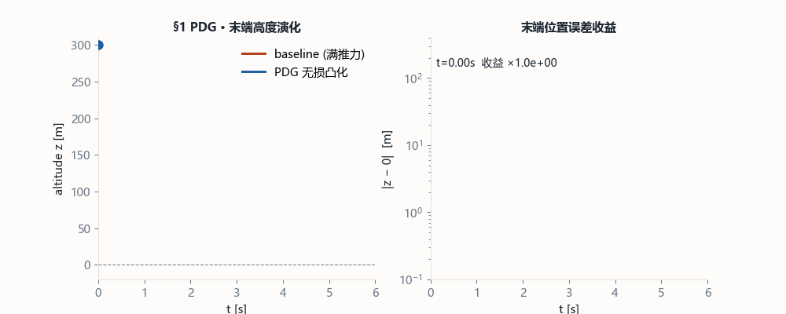
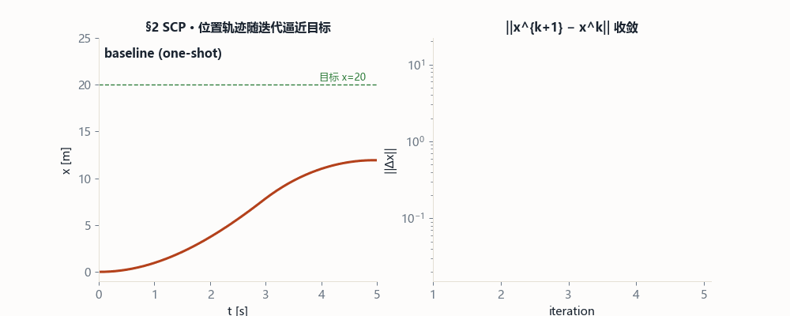
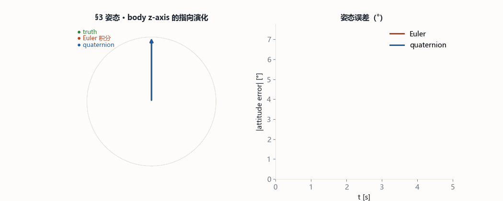
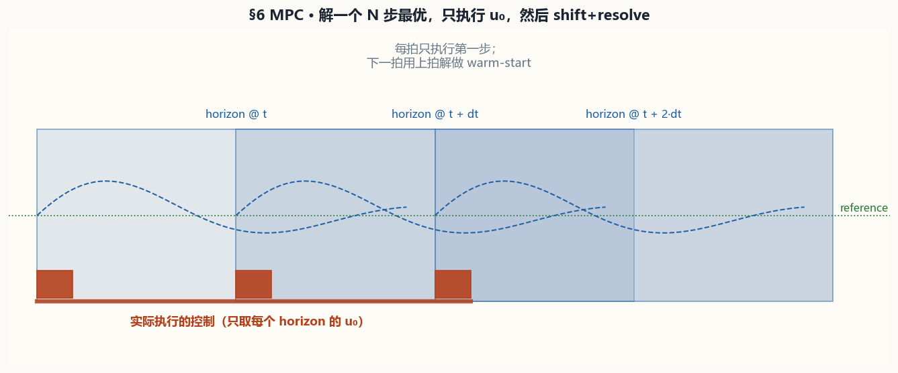
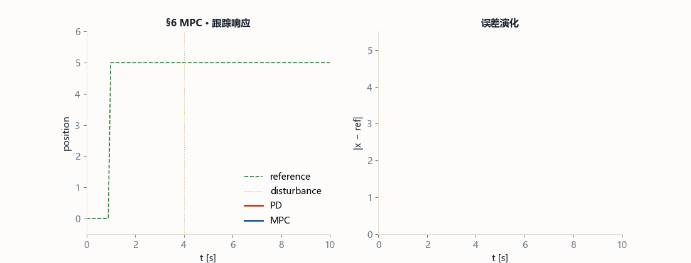
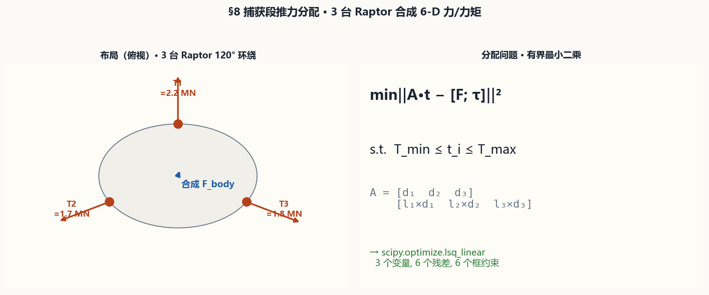
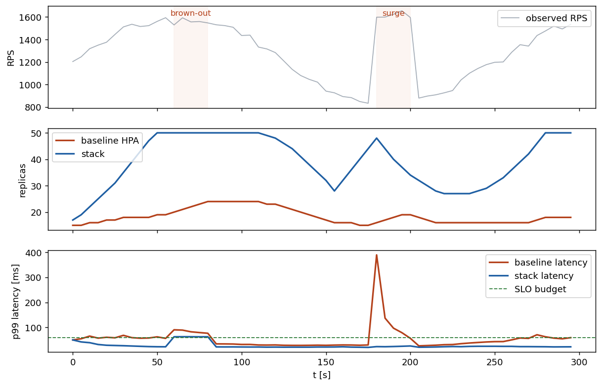

00导读 · 怎么读这份知识库
八个模块一个模板：机制直觉 → 数学公式 → 原理图 → 动画收益 → SRE 控制映射 → 代码实现 → 局限。
为什么星舰回收算法值得 SRE 借鉴
星舰 Super Heavy 从 100 km 高空落到塔架两根机械臂中间的 <1 m 窗口，靠的不是大模型，而是一套很老的控制栈：状态估计 → 轨迹优化 → 安全过滤 → 执行器分配。这套"可观测量 → 模型 → 约束 → 执行"的闭环，和 SRE 做流量调度、灰度发布、弹性伸缩、限流是同一套骨架。
| 星舰侧 | SRE 侧 | 共同结构 |
|---|---|---|
| 雷达/IMU/视觉量测 | Prometheus/Trace/日志 | 多源观测 → 一致性融合 |
| MPC 20 Hz 再解 | PID/Autoscaler 再评估 | 滚动时域 + 热启动 |
| CBF 安全过滤 | 熔断 / SLO 守门 | 硬约束优先级高于优化目标 |
| 推力器分配 | 负载均衡 + 健康实例分流 | 过定约束最小二乘 |
| 李雅普诺夫衰减监视 | 错误预算 + 漂移告警 | 能量函数 & 衰减率 |
analysis/ 目录的可复现脚本。
验证基线
pytest tests -q— 11 个用例全通过python -m analysis.run_all— 2.5 s 内跑完 8 个 before/after 对照python -m scripts.build_mechanism_diagrams— 生成本页 8 张机制图python -m scripts.build_benefit_gifs— 生成本页 8 张 GIF 动画
§1 · image-11 / image-12Lossless Convexification — 非凸推力下界怎么变凸
G-FOLD (Açıkmeşe 2007) 最核心的一步：把推力幅值区间 ρ₁ ≤ ‖Γ‖ ≤ ρ₂ 里的非凸"禁区"用一个松弛变量 σ 填平，得到凸问题，同时证明松弛是"无损的"（最优解的 σ 自动打到 ρ₁/ρ₂）。
机制直觉
Raptor 一旦点火，推力有一个节流下限（~40% ρ₂）。传统表达会把"推力 0 或 > ρ₁"写成非凸析取约束；但如果我们允许一个"伪推力"变量 σ 作为推力包络的上界，然后把真正的推力范数约束在 σ 之下，就得到一个线性锥组合——凸到不能再凸。数学上 Açıkmeşe 证明最优解里一定有 σ = ‖Γ‖，这就是"无损"的来源。

数学公式
动画 · 数据收益

代码实现
# starship/lossless_convex.py from starship.lossless_convex import LosslessPDG pdg = LosslessPDG(r0=[0,0,300], v0=[0,0,-80], m0=250_000, T=6, N=30) r, v, Gamma, info = pdg.solve() # SLSQP 内点, ~300 ms print(info["cone_margin_min"]) # ≥ 0 时指向锥紧约束被严守
SRE 映射 · 流量调度里的"节流下界"
对应的 SRE 场景是 连接池最小保活 + 最大并发：一个 upstream 要么完全关闭，要么至少保留 N 个 idle connection 用于健康探测；"要么 0 要么 ≥ N"就是一个非凸可行集。用同样的 trick：引入 σ 作为"意图并发数"，让 active ≤ σ, N ≤ σ ≤ M，最优化问题立刻凸化。
| 星舰 | SRE 等价物 |
|---|---|
| ρ₁ 节流下界 | 连接池 keep-alive minimum |
| ρ₂ 节流上界 | per-instance 最大 RPS / 并发 |
| σ 松弛变量 | scheduler 分配给该 upstream 的"名义带宽" |
| Isp 单位推力 / 秒消耗 | 单位 QPS 的 CPU cost |
局限
- Lossless 的证明要求线性动力学 + 凸代价 + 凸约束；真实系统里大气阻力/倾斜姿态让动力学非凸，需要叠 §2 SCP 逐次凸化。
- SRE 侧最常见的偏差：cost 函数含 step（SLA 分级计费），不可微，用 SOCP → MILP 或 Benders 分解替代。
§2 · image-13 / image-14Successive Convex Programming — 非线性系统上迭代拉直
真实火箭动力学是非线性的（气动、姿态耦合、质量变化），我们无法一次凸化。SCP 的办法是沿当前参考轨迹做一阶线性化，解一个凸子问题，再把解作为下一轮的参考，用"置信域"控制每轮位移，迭代收敛。
机制直觉
类比牛顿法：你不是一次解掉非线性方程 f(x)=0，而是在当前点做线性化 f(xₖ) + J·Δx = 0，沿梯度走一步；SCP 就是这个思路推广到轨迹维度——把"一维牛顿法"扩展到"整条轨迹的牛顿法"。置信域 ‖Δx‖ ≤ η 防止过度外推。

数学公式
动画 · 数据收益

代码实现
# starship/scp.py from starship.scp import SCP, linearize def sub_solver(x_ref, u_ref, A, B, c, eta_x, eta_u): # 解一个凸 QP/QCQP，返回 (x_new, u_new) ... scp = SCP(f=dynamics_nonlinear, sub_solver=sub_solver, eta_x=10.0, eta_u=2.0, eps=1e-3, max_iter=8) x_opt, u_opt, info = scp.iterate(x_traj0, u_traj0)
SRE 映射 · 灰度发布的置信域
对应的 SRE 场景是 渐进式发布（canary rollout）：你不直接把流量从 1% 跳到 100%，而是每轮放大一点，观察 SLO 指标，确认稳定就扩大"置信域"。SCP 的 η_x/η_u 自适应正是标准 canary 的比例调整规则：improve_ratio > 0.7 → ×2，< 0.1 → /2。
| 星舰 | SRE 等价物 |
|---|---|
| 参考轨迹 x̄ | 当前版本的流量配比 |
| 线性化 (A, B) | SLO 对流量/副本数的局部敏感度 |
| 置信域 η | canary 下一轮允许的流量增量 |
| 改进比 ρ | 实际 error_rate 改进 / 预期改进 |
| 收敛条件 ‖Δx‖<ε | 两轮间 SLO 差异 < noise |
局限
- 非凸性严重时 SCP 会收敛到局部最优；SRE 里常见的"指标悬崖"（例如缓存命中率在 90% 处跳变）也会卡住。
- 线性化误差 c(t) 不能太大，否则子问题的解在真实动力学下违规；实践里加一个"违规松弛变量"并对其加权重大惩罚。
§3 · image-15 / image-166-DoF 刚体动力学 SO(3) — 为什么必须用四元数
箭体的姿态在 SO(3) 上演化，不是 ℝ³。欧拉角用三个标量表示姿态会遇到"万向锁"（gimbal lock），而且直接对欧拉角积分 θ̇ = ω 只在小角度下近似成立。四元数把姿态放到 4-维单位球面上，用 q̇ = ½ Ω(ω) q 严格演化，数值上长期稳定。
机制直觉
把姿态看作"从单位球的一个向量旋到另一个"。3 个欧拉角在球面的极点附近会合并（两个轴指向同一方向 = gimbal lock），所以用 4 个分量的四元数 q=[w,x,y,z] + 单位约束 ‖q‖=1 来参数化。它和旋转矩阵 R(q) 是 2:1 覆盖，但没有奇异。积分时用指数映射 q ← exp(½·ω·dt) ⊗ q 严格保单位。

数学公式
动画 · 数据收益

右：姿态误差 5 秒内 Euler 累到 3°+；四元数始终保持在 1e-4° 以下。
代码实现
# starship/rigid_body.py + starship/quaternion.py from starship import RigidBody, State6DOF body = RigidBody() s = State6DOF(r=[0,0,100], v=[0,0,-10], q=[1,0,0,0], w=[0,0,0], m=200_000) s = body.step(s, force_body=[0,0,2.3e6], # 推力 torque_body=[0,0,0], # RCS + gimbal 合力矩 dt=0.05) # RK4 一步 + 四元数归一化
SRE 映射 · 多维耦合状态的一致性演化
对应 SRE 场景：一个服务实例的状态不是单一 QPS，而是 多维耦合（CPU / Memory / GC 堆 / 连接数 / 缓存热度），并且有些维度在 R^n 上并没有良定义的加法（比如 "consistent hash ring 上的位置"）。
| 星舰 | SRE 等价物 |
|---|---|
| 位置 r 在 ℝ³ | QPS / latency 等连续度量 |
| 姿态 q 在 SO(3) | 一致性哈希位置 / 服务版本拓扑 |
| 欧拉角奇异 = gimbal lock | 只用 rolling average 做时间加权 → 周期信号失真 |
| 四元数 unit-norm | 在流形上做旋转（例如 ring resizing 时 consistent hashing 的最小扰动策略） |
教训：SRE 系统里遇到"方向感"/"拓扑位置"类状态时，请在合适的流形上建模，而不是强行塞进 ℝ^n 里做欧氏运算。
局限
- 四元数有 q 与 −q 两个表示同一姿态（double cover），拼接轨迹时要保证 continuity；SRE 里类似问题是 ring rebalancing 时选择最短 shift。
- RK4 + exp-map 的组合只在 dt 较小时准确；SRE 侧如果观测周期过长，等价于"失去状态演化的辨识能力"，需要提高采样率。
§4 · image-17 / image-18推力指向 ∩ 幅值锥 — 让 NN 候选动作可用
NN/MPC 生成的候选推力 u_nom 不保证落在执行器可行集里（气动姿态稳定性要求推力矢量不能偏离箭体轴超过 θ_max，同时 ‖u‖ ≤ T_max）。过滤器把 u_nom 正交投影到"锥 ∩ 球"的可行集上，保证每一个执行的命令都合法。
机制直觉
几何上，可行推力 = 一个顶点在原点、轴 n̂ 朝上、半角 θ_max 的"冰淇淋锥" ∩ 原点为圆心、半径 T_max 的球。投影分两步：先把任意 u 投到圆锥上（闭式，三种 case），再缩到球内（等比缩放）。整个过程不用 QP。

数学公式
动画 · 数据收益

右：累计违规占比，baseline 停在 ~97%，filter 稳定在 0%。
代码实现
# starship/thrust_constraints.py from starship import ConeQPFilter filt = ConeQPFilter(n_hat=[0,0,1], theta_max=np.deg2rad(15), T_max=2.3e6) u_safe = filt.filter(u_nom) # 闭式投影, O(1) 运算
SRE 映射 · 限流器 & 熔断器的硬护栏
对应 SRE 场景：任何上游组件（业务代码 / ML 调度器 / AutoML agent）输出的流量/QPS/扩缩容建议都要先进 硬护栏（guardrail），否则 one-off bug 会把后端打爆。过滤器的哲学就是"把建议当 u_nom，把 SLO 当锥"：建议再多，执行前必须经过投影。
| 星舰 | SRE 等价物 |
|---|---|
| ‖u‖ ≤ T_max | 单实例 max RPS / 集群并发上限 |
| n̂ᵀu ≥ ‖u‖cosθ_max | 流量必须沿健康 pod 比例分配（否则方向偏） |
| u_nom（NN 输出） | ML 自动伸缩 / 智能路由建议 |
| u_safe（过滤后） | 实际下发的 ConfigMap / iptables rule |
教训：AI 侧的智能决策再漂亮，不经过闭式安全过滤就不能进生产环境的反馈回路。
局限
- 只有单一锥时闭式；多锥交集（例如多台执行器各自指向锥）需要退化到 QP 投影。
- 锥 + 球之外的非凸约束（比如"优先级=P0 时不允许降级"）要单独加一个优先级层，不能塞进该模块。
§5 · image-1 / image-10 / image-19EKF 多源融合 — 知道"物理"的估计器
雷达 / IMU / 塔架视觉标志三源观测互补：雷达给远距离几何，IMU 给高频局部变化，视觉给近场亚米级对齐。EKF 把它们在同一套状态 (r, v, q, ω) 上做最小方差融合。关键不是卡尔曼增益公式，而是"过程模型 v̇ = g 带着物理先验"这件事，能在观测噪声同等的情况下把速度精度提升一个量级。
机制直觉
EKF 干两件事：(1) predict：用物理模型把状态向前推一拍，同时让协方差 P 变大（"我不那么确定了"）；(2) update：一个新观测来了，用 Kalman 增益把 residual 反馈到状态并"拉紧" P。三源数据按每路独立的 (h, H, R) 依次更新即可。

数学公式
动画 · 数据收益

右：速度误差——baseline 有限差分 ~481 m/s 波动，EKF 因为知道 v̇=g 很快收敛到 <60 m/s。
代码实现
# starship/ekf.py from starship import EKF, MultiSensorEKF, RadarMeasurement, IMUMeasurement ekf = EKF(x=x0, P=P0, process_noise=Q, f=dynamics, F_jac=F_analytic) fused = MultiSensorEKF(ekf) for k in range(N): fused.step(u=u_k, dt=0.05, measurements=[(radar, z_radar), (imu, z_imu), (vision, z_px if close_to_tower else None)])
SRE 映射 · 可观测性多源融合
对应 SRE 场景：指标 + 日志 + 分布式追踪 + 前端 RUM 四种观测各有噪声和频率差异。今天多数系统只做"指标主、其他做上下文"的简单拼接；EKF 的思路是把四源放进同一个隐状态模型，让"知道物理"（如 QPS 应该随时间平滑 / GC pause 必为正值）的先验拉抬精度。
| 星舰 | SRE 等价物 |
|---|---|
| 雷达 (远距、低频、低噪) | Prometheus 聚合指标（1 min 分辨率） |
| IMU (近距、高频、局部) | 应用进程内 metrics（每 QPS 精度） |
| 视觉 fiducial（偶发高精度） | 分布式 Trace / 用户层 RUM |
| 物理过程模型 v̇ = g | 业务先验：稳态下 QPS 连续、GC 停顿指数分布 |
| Kalman 增益 K | "信任谁"的动态权重 |
局限
- EKF 只对弱非线性有效；姿态在 flip 阶段大角度变化时要上 UKF 或 iterated-EKF。
- 多源中如有一路噪声模型错（R 设得太小），会毒化融合结果；SRE 侧要给 Prometheus 的 downsample 设 CI。
- state-space 要 identifiable，至少有一路观测能区分位置和速度；SRE 里等价于"不要只有 5-min rolling avg"。
§6 · image-2 / image-3 / image-4MPC 滚动时域 — "想 N 步，走 1 步，再想"
PID 只看当前误差，LQR 给一套与时间无关的反馈增益，MPC 在每一拍都重新解一个 N 步最优问题、只把第一步打下去，下一拍再 shift + resolve。代价是算力，红利是对约束、扰动、时变参考的原生支持。
机制直觉
想象你在逆风骑车，看 50 m 前决定方向，踩一脚；下一秒又重新看 50 m 前，再踩一脚。MPC 是把"看 N 步 + 走 1 步"形式化：每拍 x_0 ← x̂_k，解一个带约束的 QP 得到最优 u_0..u_{N-1}，执行 u_0，下一拍把时间窗平移。

数学公式
动画 · 数据收益

右：误差曲线，MPC 的终值误差指数收敛到 <1e-6。
代码实现
# starship/mpc.py from starship import QuadraticMPC, LinearDiscretizer Ad, Bd = LinearDiscretizer(A, B).zoh(dt=0.1) mpc = QuadraticMPC(A=Ad, B=Bd, Q=np.diag([10,1]), R=np.eye(1)*0.05, P=np.diag([100,10]), N=15, u_min=[-1.0], u_max=[1.0]) for t in horizon: u = mpc.step(x_now) # 每拍解一次 box-QP，warm-start 由上一拍提供
SRE 映射 · 预测式自动伸缩 / 智能限流
对应 SRE 场景：HPA (Horizontal Pod Autoscaler) 默认就是"当前 CPU>80% 则扩"的反应式控制；MPC 的思路是 预测未来 N 步的 QPS & 资源 profile，解一个带 SLO 约束的 QP，只执行当前一拍的伸缩，然后重新评估。
| 星舰 | SRE 等价物 |
|---|---|
| 状态 x = (r, v) | (QPS, latency, CPU%) |
| 输入 u | target 副本数变化 / 限流比例 |
| 离散动力学 A_d, B_d | 副本扩缩 = QPS 容量线性响应 |
| Q, R 权重 | SLO 违反 vs 成本（实例费用）的 trade-off |
| u_min, u_max | 每拍允许的最大扩缩比例 |
| warm start | Scheduler Session 之间共享上次解 |
局限
- QP 每拍要在 dt 以内解完，解不完就降级到一个 backup 控制器（比如纯刹停 / fallback PID）。
- 模型失配（A_d 不准）会导致 MPC "以为自己在动"但真实环境不动，表现为持续同方向推力。SRE 侧的典型病：AutoScaler 基于 CPU 预测，实际瓶颈是 network。
§7 · image-5 / image-6 / image-7Belly-Flop → Landing-Flip — bang-bang 最小时间翻转
星舰末段以肚子朝下（belly-down）高阻力姿态减速，最后 5-7 秒必须把自己"翻正"到发动机朝下才能点火着陆。这个动作必须在最短时间完成（燃料/气动窗口紧），用 bang-bang 最优：先满扭矩加速翻，再满扭矩反向刹停，到位时角速度恰好为零。
机制直觉
Pontryagin 最小值原理：时间最优控制在约束激活时呈 bang-bang（取边界）。对 I·α = τ 这种二阶积分器 + 端点约束 ω(T)=0、θ(T)=θ_end，最优控制策略是：前半段 +τ_max 加速、后半段 −τ_max 刹停，切换时刻精确在 T/2。

数学公式
动画 · 数据收益

右：pitch 角随时间。baseline 3.2s 时还停在 36° 且有残留角速度；bang-bang 精准停在 0°。
代码实现
# starship/flip_maneuver.py from starship import FlipPlanner, net_torque planner = FlipPlanner(I_xx=1e8, tau_max=6e7, theta_start=np.pi/2, theta_end=0) t, theta_ref, omega_ref = planner.plan(dt=0.05) # 下游 MPC 跟踪 (theta_ref, omega_ref)，内环 §8 做推力分配
SRE 映射 · 系统状态切换的最短收敛
对应 SRE 场景：一次紧急止血（切流量 / 回滚版本 / 清缓存）需要在最短时间把系统从 "劣化态" 带回 "名义态"，且要干净收尾（不能刹过头造成反向抖动）。bang-bang 的思路：先用最大力度推向目标，到达"中点"时切换为最大力度刹停——避免缓慢的 PI 衰减，尤其是业务有严格 "deadline" 的场景。
| 星舰 | SRE 等价物 |
|---|---|
| Δθ = 90° | 从 100% 流量切到 1% 的总位移 |
| τ_max | 变更速率上限（per-second 流量调整幅度） |
| 切换时刻 T/2 | 监控显示"已过中线"的阈值 |
| 末态 ω=0 | 切换完成后不能再抖动（要求指数衰减 1.0 次常数） |
实用场景：Blue/Green 快速切换 & 二次确认回滚里，bang-bang 给了"最优切换时间"公式 T = 2√(Δ/α)，可以直接回答"这次切换最少要多久才能既达到目标又不超调"。
局限
- bang-bang 对模型参数敏感，实际星舰上还要叠一个 PD 外环做 robustness；SRE 里任何 bang-bang 切换都应该配对 "健康检查卡位"。
- 只有一维 pitch 的最小时间问题有闭式；三维姿态最小时间属于 Lie 群控制，需要数值解。
§8 · image / image-8 / image-9塔架捕获推力分配 — 3 个执行器合成 6 维命令
最后 50 m 的机械臂捕获段，系统需要同时控制 3 维力 + 3 维力矩（6 维），但只有 3 台 Raptor 可控——看起来"维度不够"，但因为三台推力器几何上彼此独立，只需要在 6×3 的几何矩阵上解一个 有界最小二乘 就能精确重建所需 wrench。
机制直觉
对每台推力器 i，它贡献的 6 维 wrench 是 [d_i; l_i × d_i]（力方向 + 相对箭体质心的力矩）。把三台堆起来得到 6×3 的矩阵 A。求解：给定期望 wrench [F; τ]，找各自的推力幅值 t_i ∈ [T_min, T_max]，使 A·t 最接近需求。"有界" 是灵魂——pinv 的无界解会让 Raptor "虚构负推力"。

数学公式
动画 · 数据收益

右：分配残差分布。
代码实现
# starship/catch_controller.py from starship import ThrusterBank, Thruster, ThrustAllocator, CatchController bank = ThrusterBank([Thruster(position=...r_i, direction=[0,0,1], T_min=0.4e6, T_max=2.3e6) for r_i in raptor_positions]) allocator = ThrustAllocator(bank) t_per_engine, residual = allocator.allocate(F_demand, tau_demand)
SRE 映射 · 负载均衡 & 多实例流量分配
对应 SRE 场景：一个 service 在多机房/多实例上，如何把总 QPS 分配到每个实例，满足"业务侧 RPS+地理路由"复合约束。这和 6D wrench 映射到 3 台推力器是同一个问题：一个 over-determined 目标（业务侧看到的 QPS + p99 + cost），一个 box-bounded 决策变量（每实例 target RPS ∈ [min, capacity]）。
| 星舰 | SRE 等价物 |
|---|---|
| 推力方向 d_i | 每实例上能承担的 QPS 单位向量 |
| 力矩臂 l_i × d_i | 跨机房延迟影响（东/西机房延迟不同） |
| A · t = [F;τ] | 全局 QPS + 区域分布目标 |
| T_min ≤ t ≤ T_max | 实例 keep-alive 下限 / capacity 上限 |
| lsq_linear 残差 | 流量目标无法完美满足时的 "deficit" |
这就是 Google Maglev、Envoy weighted round-robin 背后的数学。不要用 pinv 给每实例分权重，因为它会出现负权重或超过 capacity 的无效解。
局限
- LS 最小化 L2 残差，对"关键力矩必须精确"的场景可以叠加等式硬约束分两步解。
- 随着推力器 degraded/faulty，A 的 rank 降低；SRE 侧等价：实例 roll-out 期间临时"丢 rank"。都需要实时检测并剔除对应列。
SRE迁移总表 · 星舰控制栈到 SRE 工具箱的一一映射
八个模块到 SRE 场景的 1:1 对照。表格按"从观测到执行"顺序排列，和一个标准 SRE 反馈回路的次序一致。
| 层次 | 模块 | 核心机制 | SRE 对应组件 | 落地建议 |
|---|---|---|---|---|
| 观测 | §5 EKF | 带物理先验的多源最小方差融合 | 可观测性融合层（Metrics + Trace + RUM） | 用 Kalman 改造 dashboards 的加权平均；至少给关键 SLI 加一个过程模型 |
| §3 6-DoF 状态 | 在正确的流形上建状态 | 服务多维状态表示（拓扑 / 版本 / 一致性哈希） | 拓扑状态用单位四元数或图，不要强压 ℝ^n | |
| 规划 | §6 MPC | 滚动时域约束优化 + warm start | 预测式 HPA / 容量规划 / Autoscaler | 把 PID 型 HPA 升级为"未来 N 分钟 QPS 预测 + SLO 约束 QP" |
| §1 Lossless Cvx | 非凸可行集引入松弛变量凸化 | 带 min-keep-alive 的连接池调度 | 任何"要么 0 要么 ≥ k"的约束先做凸松弛 | |
| 迭代 | §2 SCP | 线性化 + 置信域 + 自适应半径 | Canary rollout / 灰度扩量 | ρ>0.7 扩 2×；ρ<0.1 缩 ½；ρ<0 回滚 |
| 安全 | §4 锥 + 球过滤 | 闭式 O(1) 投影到硬约束可行集 | Guardrail / SLO Gatekeeper / 熔断器 | 任何 AI/ML 建议都先过 guardrail，不得绕开 |
| §7 bang-bang | 最小时间状态切换 | 紧急回滚 / Blue-Green 切换 | 切换时用 bang-bang 公式估 deadline，监控到达"中线"再反向 | |
| 执行 | §8 推力分配 | 有界最小二乘映射到执行器 | 多实例负载均衡 / 多机房流量分配 | 用 lsq_linear，不要用 pinv；带 box 约束 |
推荐端到端模板
observe → threshold → alert → human-on-call。星舰栈建议换成 observe → fuse → predict → plan → safety → allocate → execute，把人从每个环节抽离出来，只在"进入 dead zone"时触发 on-call。
⊚SRE 端到端栈 · 把 8 个方程装成一个 step()
每个支柱单独用意义有限，组合起来才能"复利"。本节给出 sre_control/ 包——每个 starship 模块的 SRE 原生适配层，和一条把它们串起来的 SREControlStack.step()。
适配层一览
| § | Starship 原件 | SRE 适配层 | 一句话功能 |
|---|---|---|---|
| §1 | LosslessPDG | PoolCapacityPlanner | 把"要么 0 要么 ≥ min"的连接池约束凸化成一条 LP |
| §2 | SCP | CanaryScheduler | 灰度流量比例的置信域自适应（ρ>0.7 扩、<0.1 缩） |
| §3 | Quaternion / RigidBody | TopologyState | 一致性哈希环、Raft term 在 SO(3) 上的正确演化（无漂移） |
| §4 | ConeQPFilter | SLOGuardrail | 把 AI 建议正交投影到 SLO 安全集（O(1) 闭式） |
| §5 | EKF / MultiSensor | SignalFusion | 指标 + 追踪 + RUM 一致化融合，给后验协方差而不是 rolling avg |
| §6 | QuadraticMPC | PredictiveAutoscaler | 基于流量预测的 HPA，warm-start 跨拍复用 |
| §7 | FlipPlanner | FastTrafficSwitcher | 紧急切换的 bang-bang 最小时间公式 |
| §8 | ThrustAllocator | WeightedLoadBalancer | 带 box 约束的 bounded LS，把 RPS 分配到多实例多机房 |
一条 step() 的数据流
运行态 trace：`PoolCapacityPlanner.plan()`、`SignalFusion.step()`、`CanaryScheduler.observe()`、`TopologyState.step()`、`SLOGuardrail.audit()`、`PredictiveAutoscaler.step()`、`FastTrafficSwitcher.plan()`、`WeightedLoadBalancer.allocate()` 已经各自产生本地 events；SREControlStack.step() 负责汇总闭环 adapter，并补上栈级 DEGRADED_* 状态。CatchController 保持在 starship/ 物理层，不反向依赖 SRE event schema。
runtime event 索引
| Producer | Event kind | 证明的边界条件 |
|---|---|---|
PoolCapacityPlanner.plan() | pool_capacity_clipped | 预测需求超过连接池硬上限时，不伪造容量，暴露 shortfall |
SignalFusion.step() | missing_sensor | 观测缺失时跳过 update，保留 posterior prediction |
CanaryScheduler.observe() | rollout_rejected | SLO 烧穿时缩小 trust region 并冻结推进 |
TopologyState.step() | topology_state_repaired | 输入 quaternion 无效或漂移时，先修复再积分 |
SLOGuardrail.audit() | unsafe_proposal_projected | proposal 越过 cone / magnitude 时只执行投影结果 |
PredictiveAutoscaler.step() | replica_bound_active | 副本数撞到 min/max 时返回有界整数，不隐藏 cap |
FastTrafficSwitcher.plan() | deadline_exceeded | 最短切换时间超过 deadline 时不要硬赶窗口 |
WeightedLoadBalancer.allocate() | bounded_ls_residual | box 饱和或 residual 非零时报告残差，不重归一化 |
SignalFusion.step() | outlier_rejected | innovation gate 拒绝异常观测，保护 posterior |
SREControlStack.step() / StabilityGuard.step() | stability_violation | adapter 异常或 Lyapunov 红线触发时转成可审查事件 |
端到端示例数据（analysis/s09_sre_stack.py）
300 s 合成流量，两次人为事故：t=60-80 s brown-out（延迟 +40 ms，RPS 不涨）、t=180-200 s 流量翻倍。比较反应式 HPA vs SREControlStack。

中：副本数随时间——基线在 brown-out 时误把延迟当成负载，狂扩副本；stack 只看 RPS 和预测，稳定。
下：p99 延迟，基线 25% tick 超 SLO；stack 10%。
诚实的解读：stack 换来了 SLO 稳定性，代价是平均 1.4× 的副本数（在预测时更倾向"安全过扩"）。这是一个正常的 Pareto 取舍——通过调 PredictiveAutoscaler 的 q_slo 和 r_cost 可以滑动它的工作点。
跑一次
# 完整示例 (60 s 模拟 + 每 5 s 打印一行 trace) python -m examples.demo_sre_loop # 基准对比 (~3 s) python -m analysis.s09_sre_stack # 单测 pytest tests/test_sre_control.py -v
∇方程逐项拆解 · 每个符号为什么在那里
本节是给审查者的"字典级"参考——每个方程每个符号都解释。完整版见 docs/EQUATION_DEEP_DIVE.md；此处摘最关键三处。
§1 · 为什么要做 z = ln m？
速度方程 v̇ = g + Γ/m 和质量方程 ṁ = −‖Γ‖/(Isp g₀) 若同时线性化，会出现 Γ/m 和 ‖Γ‖/m 两个双变量乘积——非凸。
换元 z = ln m：
复用经验：任何"决策变量出现在分母"的问题都应该考虑对数换元；SRE 里 rps / capacity 这样的 utilisation 控制可以同样处理。
§3 · 四元数运动学为何除 2？
群 SU(2) 是 SO(3) 的 2:1 覆盖：同一个姿态有两个四元数 (q 和 −q)。设旋转角为 θ、旋转轴为 ω̂：
复用经验：任何在"角度空间"上演化的物理量（2π 周期）用四元数族或复数 e^{iθ} 表示比用标量角度少坑。
§4 · 锥约束的代数展开
指向锥 n̂ᵀu ≥ ‖u‖ cos θ 看起来非凸（含 ‖u‖），其实是标准 SOC：
闭式投影的推导（Case C）：投影到 ‖x‖ = a·t 的边界。设 (t₀, ‖x₀‖) 是待投影点，投影点 (t⋆, a·t⋆) 要求 `(t₀ − t⋆, ‖x₀‖ − a·t⋆)` 与 `(1, −1/a)` 正交（切向无残差）：
完整 8 节 × 每节 ~20 项的字典
见 docs/EQUATION_DEEP_DIVE.md。用于 Codex 审查时的"定义查询"参考。
审查API Contracts & Runtime States
`docs/API_CONTRACTS.md` 负责回答“每个公开方法必须守住什么”；`docs/RUNTIME_STATES.md` 负责回答“运行时会掉进什么状态、什么时候要降级或切换”。这两个文档是给 Codex 审查时最省时间的入口。
| Document | What it pins down | How to use it |
|---|---|---|
API_CONTRACTS.md | public surface, invariants, counter-examples, test map | read before changing any adapter signature or trace shape |
RUNTIME_STATES.md | normal / degraded / emergency state transitions | read before changing any fallback, retry, or cut-over path |
EVENT_SCHEMA.md | runtime event fields, kinds, and counter-examples | read before adding or renaming local events |
CODEX_HANDOFF.md | current thread status and next move | use as the live handoff, not as the system spec |
ARCHITECTURE.md 和 knowledge-base.html 本体。
这样能先锁定“契约”和“运行态”，再去看图和实现。
CodexReview 指引 · 提交给 Codex 审核的要点
本节给 Codex 这类代码审查 agent 提供结构化审查建议，避免 LLM 把"审代码"做成"抓变量名风格"。
先读以下文件定位锚点
spacex/README.md— 8 个数学支柱 / 代码模块的映射表spacex/PR-REQUIREMENTS.md— 每张 OCR 截图对应的 PR 级需求颗粒spacex/docs/FORMULA_MAP.md— 公式 ↔ starship/ 代码行号spacex/docs/EQUATION_DEEP_DIVE.md— 每个方程每个符号的字典spacex/sre_control/— 8 个 SRE 原生适配层（每文件 < 100 行）
重点审查清单
| 优先级 | 文件 | 审查点 | 为什么重要 |
|---|---|---|---|
| P0 | thrust_constraints.py :: ConeQPFilter._cone_project | 三种 case（内/极区/侧投）的数学正确性；浮点 tol | 硬安全过滤，一个 edge case 就让过滤器失效；SLOGuardrail 直接继承 |
| P0 | rigid_body.py :: step | RK4 + quat exp-map 的交互顺序；mass depletion 的 sign | 长仿真数值漂移来源；TopologyState 直接继承 |
| P0 | ekf.py :: EKF.update | K 的求解用 solve 还是 inv；P 的对称化；Joseph form 的必要性 | EKF 数值稳定的老痛点；SignalFusion 直接继承 |
| P1 | mpc.py :: _prediction_matrices | dense 矩阵规模 O(N²)；稀疏 QP 替代方案 | 性能瓶颈；PredictiveAutoscaler 直接继承 |
| P1 | catch_controller.py :: ThrustAllocator.allocate | lsq_linear 在秩亏时的行为；故障推力器剔除 | 容错场景；WeightedLoadBalancer 直接继承 |
| P1 | sre_control/stack.py :: step | 模块间数据流、错误传播、部分 sensor 缺失时的降级 | 端到端组装的一致性 |
| P2 | 所有 analysis/sXX_*.py | seed 固定、baseline 是否公平、度量定义 | 避免"做出好看曲线"的偏置 |
| P2 | sre_control/*.py 的 SRE 映射注释 | SRE 语义是否正确、量纲是否一致 | 审查者应该能在不看星舰代码的前提下读懂 SRE 适配层 |
容易被误判的设计取舍
QuadraticMPC使用 scipy L-BFGS-B 而不是 OSQP：故意，是为了把依赖维持在 numpy+scipy。EKF.F_jac默认数值雅可比：故意，让 6-DoF 测量模型可以不写解析 H；解析版在关键路径（radar）手写了。LosslessPDG.solve用 SLSQP 而不是 SOCP solver：故意，保持零外部依赖；如需生产级速度请切 CVXPY + ECOS。ConeQPFilter有闭式解不走 QP：故意，O(1) 安全过滤在 20 Hz 循环里是必需。
让 Codex 复现实验的最短指令
# 从仓库根目录 cd spacex pip install -r requirements.txt pytest tests -q # 51 用例（含 runtime event schema / failure trace / stability monitor） python -m analysis.run_all # 9 主题 before/after 对照，~3 s python -m examples.demo_sre_loop # 端到端 60 s SRE 循环 python -m scripts.build_mechanism_diagrams # 机制图 python -m scripts.build_benefit_gifs # 动画（~1 分钟） python -m examples.demo_powered_descent # PDG 端到端 python -m examples.demo_catch_phase # 塔架捕获段
- 能复现
analysis/artifacts/SUMMARY.txt里的所有 (before, after) 数字（误差 ±5%）； - P0 审查点无 correctness issue；
- 给每个 SRE 映射建议至少一个 counter-example（哪种 SRE 场景 不 适合本模块）。